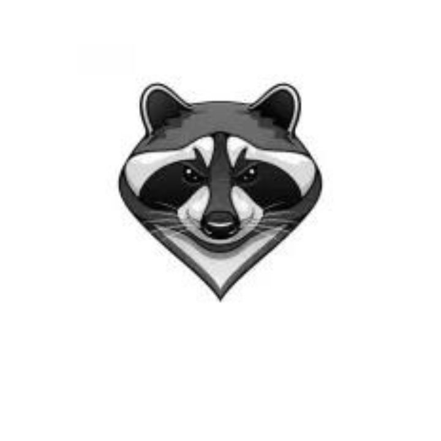
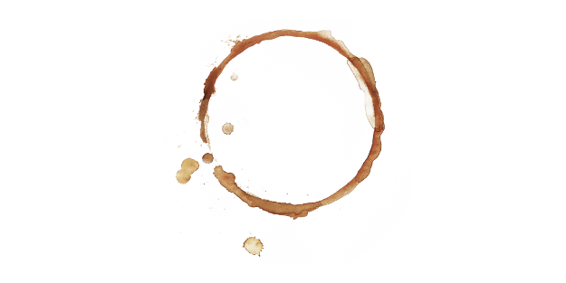
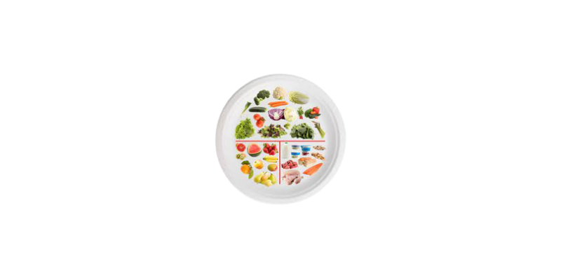

Mé jméno je Rostislav Patočka. Jeden z brankářů juniorské ligi v Liberci. Florbal už dělám 9 let.
Mé jméno je Rostislav Patočka. Jeden z brankářů juniorské ligi v Liberci. Florbal už dělám 9 let.
Já jsem začal sportovat ve svých 6 letech, kdy jsem ještě nevěděl co bude mím největším koníčkem.
Po 2 letech jsem zjistil o Florbale, který jsem jsi velice oblíbil.
Ale trénink jednou v pondělí mi přišlo málo a tak jsem se začal zajímat o jiné kluby v blízkosti.
V roce 2019 jsem našel tým jménem Starý Harcov Liberec, který požádal o to aby přišel na jejich tréninky.
Mě se to zalíbilo a tak jsem se v Prosinci tohoto roku vydal na první trénink.
Po pár tréninkách jsem jsi oblíbil hráče a našel jsi kamarády.

Teď to jsou pomalu 4 roky od mého vzrůstu a od té doby jsem vyrostl i já sám.
Jako tým jsme byli mezi prvníma 8 na závodech Nisa Open v Liberci nebo mezi 4 nejlepší týmy 2 dorostenecký lize v Českém florbalu.
Jenže při takovýdlech úspechech nám odešlo pár spoluhráčů a začali jsme řešit co bude dál.

Jako sportovec jsem musel budovat i tělo.
To znamená že jsem cvičil a posiloval.
Jenže jen cvičení není všechno, musel jsem začít řešit i stravu.
A to tak že jsem jsi skládal jídelníčky podle toho co potřebuju přijímat.
Protože každý dokáže cvičit a něco se sebou dělat ale málo kdo ví co má jíst.
Tím pádem jsem začal růst a rýsovat se.

Začal jsem studovat a zjišťovat jak strava funguje.
A tyto studia jsem začal zkoušet na sobě.